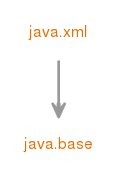

Module java.xml
定义用于XML处理的Java API（JAXP），Streaming API for XML（StAX），Simple API for XML（SAX）和W3C文档对象模型（DOM）API。
- Module Graph:
- 
- 从以下版本开始：
- 9
{kind=link}
-
-
Packages
Exports 软件包 描述 javax.xml 定义XML处理的常量。javax.xml.catalog javax.xml.datatype 定义XML / Java类型映射。javax.xml.namespace 定义XML命名空间处理。javax.xml.parsers 提供使用SAX（Simple API for XML）解析器或DOM（文档对象模型）文档构建器处理XML文档的类。javax.xml.stream 定义Streaming API for XML（StAX）的接口和类。javax.xml.stream.events 定义Streaming API for XML（StAX）的事件接口。javax.xml.stream.util 为Streaming API for XML（StAX）提供实用程序类。javax.xml.transform 定义用于处理转换指令的通用API，以及执行从源到结果的转换。javax.xml.transform.dom 提供DOM特定的转换类。javax.xml.transform.sax 提供SAX特定的转换类。javax.xml.transform.stax 提供StAX特定的转换类。javax.xml.transform.stream 提供流和URI特定的转换类。javax.xml.validation 提供用于验证XML文档的API。javax.xml.xpath 提供用于评估XPath表达式和访问评估环境的 对象模型中性 API。org.w3c.dom 提供文档对象模型（DOM）的接口。org.w3c.dom.bootstrap 提供一个工厂来获取DOMImplementation实例。org.w3c.dom.events 提供DOM Level 2事件的接口。org.w3c.dom.ls 提供DOM Level 3加载和保存的界面。org.w3c.dom.ranges 提供DOM Level 2范围的界面。org.w3c.dom.traversal 提供DOM Level 2遍历的界面。org.w3c.dom.views 提供DOM Level 2 Views的界面。org.xml.sax 提供核心SAX API。org.xml.sax.ext 提供与符合SAX驱动程序不一定支持的SAX2设施的接口。org.xml.sax.helpers 提供帮助类，包括支持引导基于SAX的应用程序。
-
Services
Uses Type 描述 DatatypeFactory 创建新的javax.xml.datatypeObject的工厂，javax.xml.datatypeXML映射到/从JavaObjects。DocumentBuilderFactory 定义工厂API，使应用程序能够从XML文档获取生成DOM对象树的解析器。SAXParserFactory 定义工厂API，使应用程序能够配置和获取基于SAX的解析器来解析XML文档。SchemaFactory 创建Schema对象的工厂。TransformerFactory TransformerFactory实例可用于创建Transformer和Templates对象。XMLEventFactory 该界面定义了一个用于创建XMLEvents实例的实用程序类XMLInputFactory 定义了一个工厂的抽象实现来获取流。XMLOutputFactory 定义用于获取XMLEventWriters和XMLStreamWrit的工厂的抽象实现。XMLReader 使用回调读取XML文档的界面。XPathFactory 可以使用XPathFactory实例来创建XPath对象。
-